Chiara using chiara-speech2text to communicate with a deaf friend.
Before this system, Chiara could communicate with her only in person (because she must carefully watch Chiara’s lips speaking to understand).
Thanks chiara-speech2text, Chiara can now communicate by writing with people who -otherwise- she would not be able to communicate with.
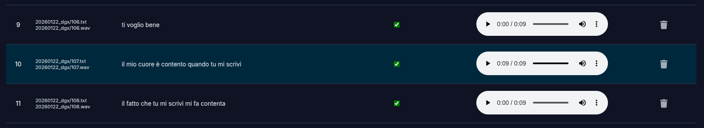
A message Chiara sent through chiara-speech2text's Android keyboard. The message reads:
"il mio cuore e' contento quando tu mi scrivi (my heart is happy when you write me)".
chiara-speech2text enables Chiara to connect with people she loves and to communicate in a way that was not possible before.
chiara-speech2text has been developed to facilitate communication of Chiara through her tablet.
Chiara is a very active girl with a passion for chatting and making new friends :)
Unfortunately, she suffers from dysarthria and speech impairments due to cerebral palsy. She has difficulties with articulation (pronunciation), fluency (speech rate and rhythm), abnormal tone and echolalia (repetitions).
Chiara can not write nor read, and she can only communicate via speech. She mostly communicates through voice messages, on her tablet, via Whatsapp.
However -due to her dysarthria- people have difficulties understanding her voice messages. Due to this, she has limited possibilities to communicate and interact with her peers, which poses a great limit to her social interactions.
chiara-speech2text is a set of software tools to help Chiara communicate and to enable ASR for her (and other users with atypical speech).
The main user interface is a custom Android keyboard, which allows to transcribe user's speech seamlessly within standard communication apps - such as Whatsapp.
The keyboard allows transcription without exiting the communication app - overcoming limitations of other ASR tools (which typically require users to exit the app, visit a web-transcription-service, and copy/paste the transcription back to the communication app).
Beyond the keyboard itself, the system has several other software modules to enable ASR, including functionalities to:
|
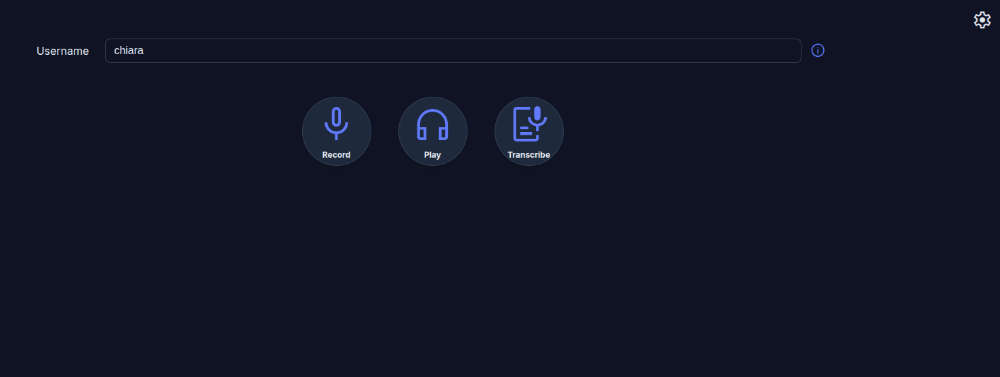 Frontend main page |
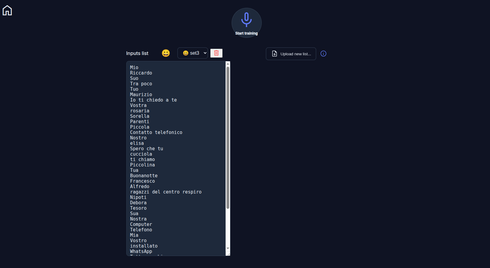 Selection of words/phrases to train the model |
|
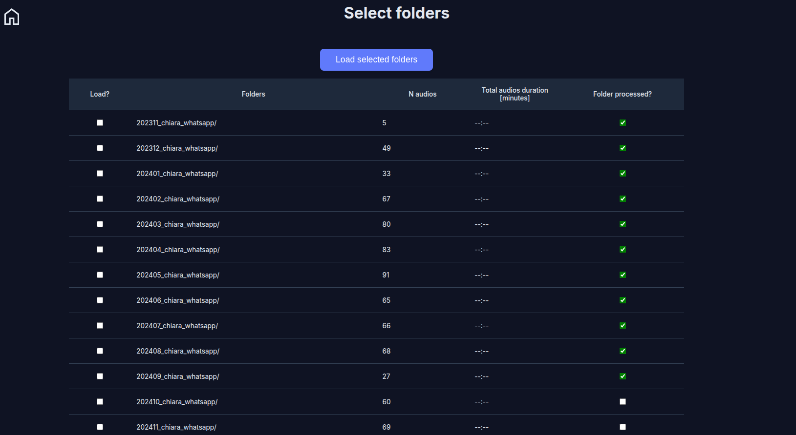 Selection of folders with data |
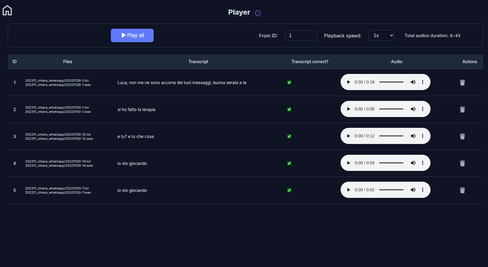 Listening to recordings, editing transcripts, deletion of low-quality recordings |
|
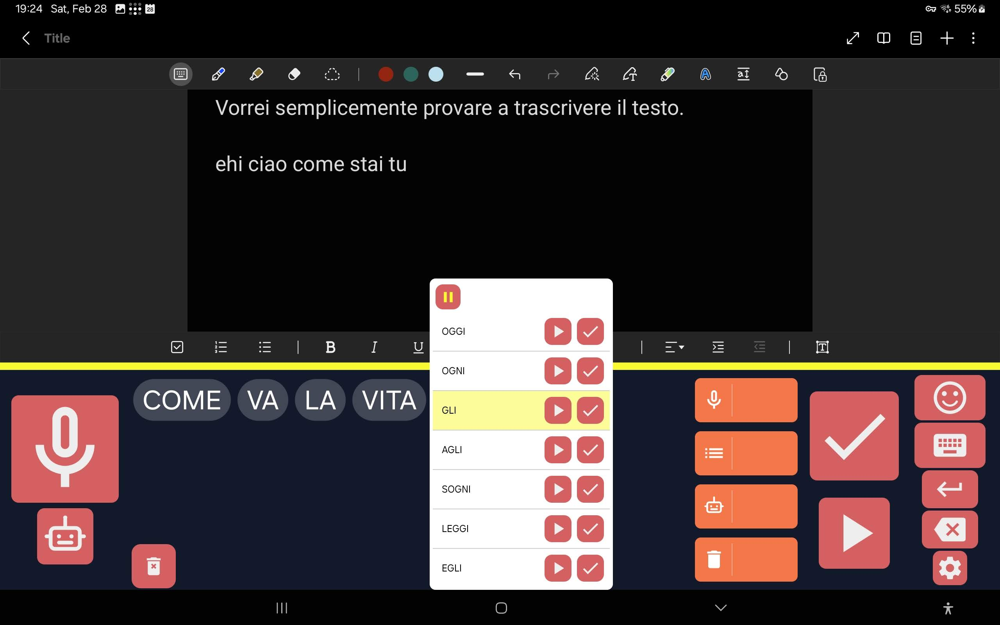 Suggestions for similar words (based on Levenshtein distance) |
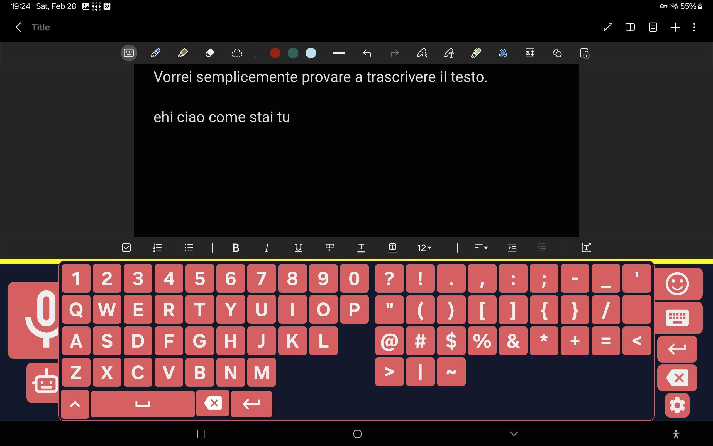 Keys |
|
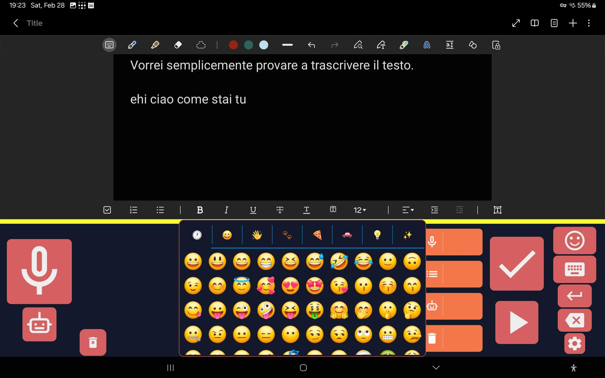 Emojis |
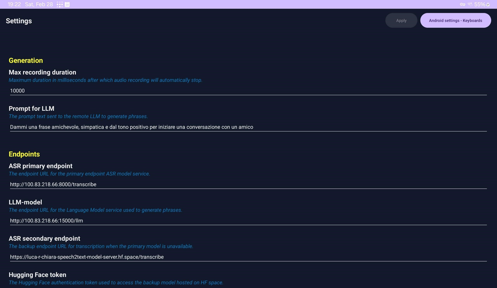 Settings |
The system is composed of the following modules:
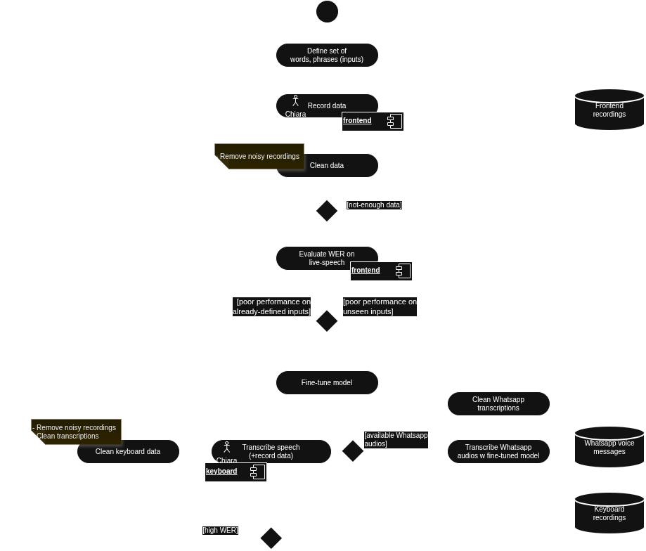
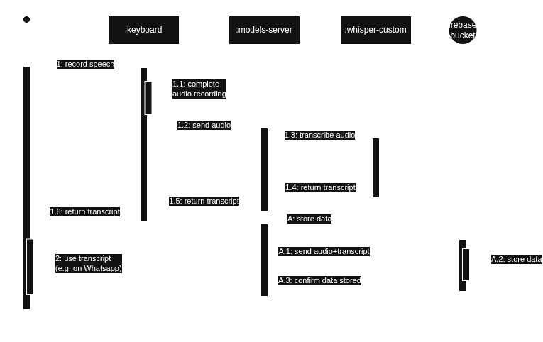
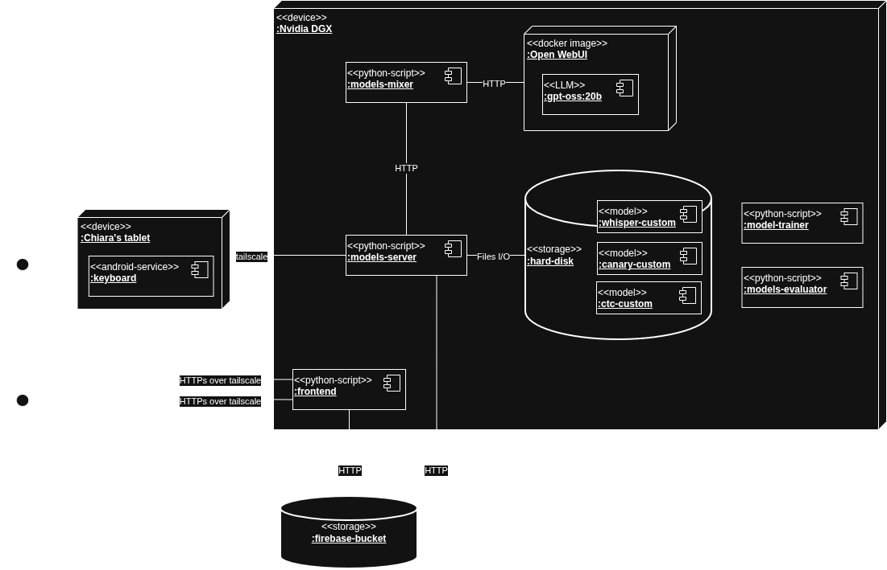
The graph below shows the Word error Rate (WER) for the fine-tuned (left) and standard / vanilla (right) Whisper models.
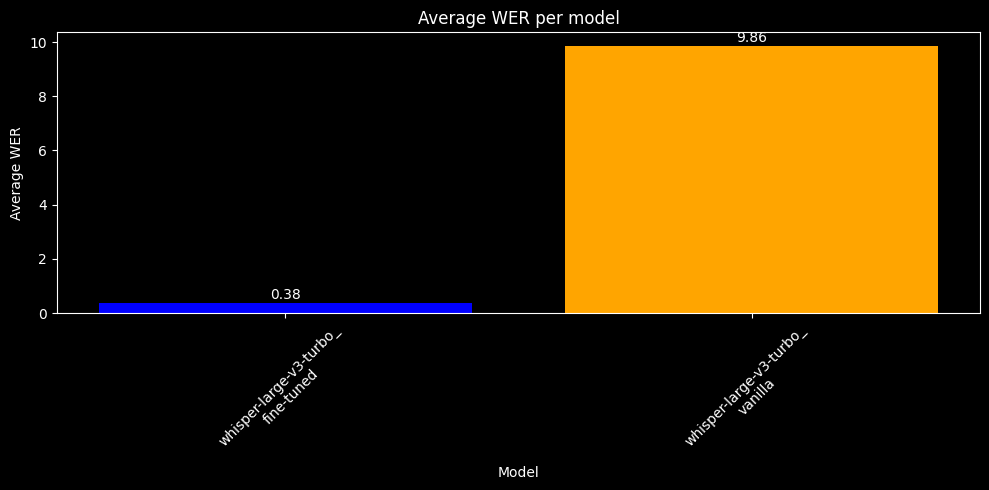
The graphs below show the evolution of WER during a typcial training session.
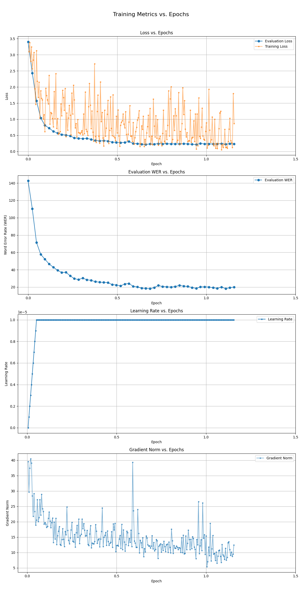
The snippet below shows a comparison of the transcripts between fine-tuned and vanilla (standard. nont fine-tuned) models, across different recordings (entries). Each entry:
{
" truth": "zia perché",
"fine-tuned": "zia perché",
"vanilla ": " perché"
},
{
" truth": "perché mi hai mandato questo video",
"fine-tuned": "perché mi hai mandato questo video",
"vanilla ": " Piki mi mando un altro video"
},
{
" truth": "che cosa mi vuoi comunicare",
"fine-tuned": "che cosa che cosa mi vuoi comunicare",
"vanilla ": " Che cosa mi vuoi comunicare?"
},
{
" truth": "zia mi puoi mandare solo video che si vedono con",
"fine-tuned": "zia mi puoi mi puoi mandare solo vediamo che ci vediamo con",
"vanilla ": " Dìa mi puoi andare a me, mi puoi andare a te lo video che ti vedo con me."
},
{
" truth": "youtube",
"fine-tuned": "i ho giusto",
"vanilla ": " Ehi ehi uai uai uai uai uai tu..."
},
{
" truth": "youtube",
"fine-tuned": "youtube",
"vanilla ": " YouTube"
},
{
" truth": "il programma della musica",
"fine-tuned": "il progresso della musica",
"vanilla ": " Ippocampo della moptica!"
},
{
" truth": "io questo programma non ce l'ho",
"fine-tuned": "io questo programma non ce l ho",
"vanilla ": " io io questo punto non è... non... non è..."
},
{
" truth": "perché io altri programmi non ne ho",
"fine-tuned": "perché io altri programmi non ce lo",
"vanilla ": " Sì, perché io ho fatto, non mi non mi non mi non mi non mi non"
},
{
" truth": "ok zia a più tardi",
"fine-tuned": "ok ok zia più tardi",
"vanilla ": " ok ok ok ok ok ok ok ok ok ok ok ok ok ok ok"
},
{
" truth": "ok zia a dopo",
"fine-tuned": "ok zia dopo",
"vanilla ": " che già bubbo"
},
{
" truth": "alessia studia ancora un pochino dopo te ne vai a casa",
"fine-tuned": "alessia studia ancora un pochino dopo te la veri a casa",
"vanilla ": " Arretta, tu be' angon po' qui ne vanno fu, tervai a capo."
},
{
" truth": "dalla foto si vede che sei stanca",
"fine-tuned": "da una volta ti vedi che sei stancata",
"vanilla ": " Non lo posso dire che ti ti ti ti ti ti ti ti ti"
},
{
" truth": "ok alessia a più tardi",
"fine-tuned": "ok alessia a più tardi",
"vanilla ": " Ok, è l'epia, allora, più bella, più bella, più bella. Guarda che belli, le ho fatti farà chiare la settimana scorsa, se"
},
{
" truth": "dalla foto si vede che sei sfinita",
"fine-tuned": "della foto ti vede che sei finita",
"vanilla ": " Dalla foto ti vedi che te è in verità."
},
{
" truth": "hai capito",
"fine-tuned": "hai capito",
"vanilla ": " Aller copito!"
},
{
" truth": "luca ora io sono disponibile",
"fine-tuned": "luca ora io sono disponibile",
"vanilla ": " Ora si"
}